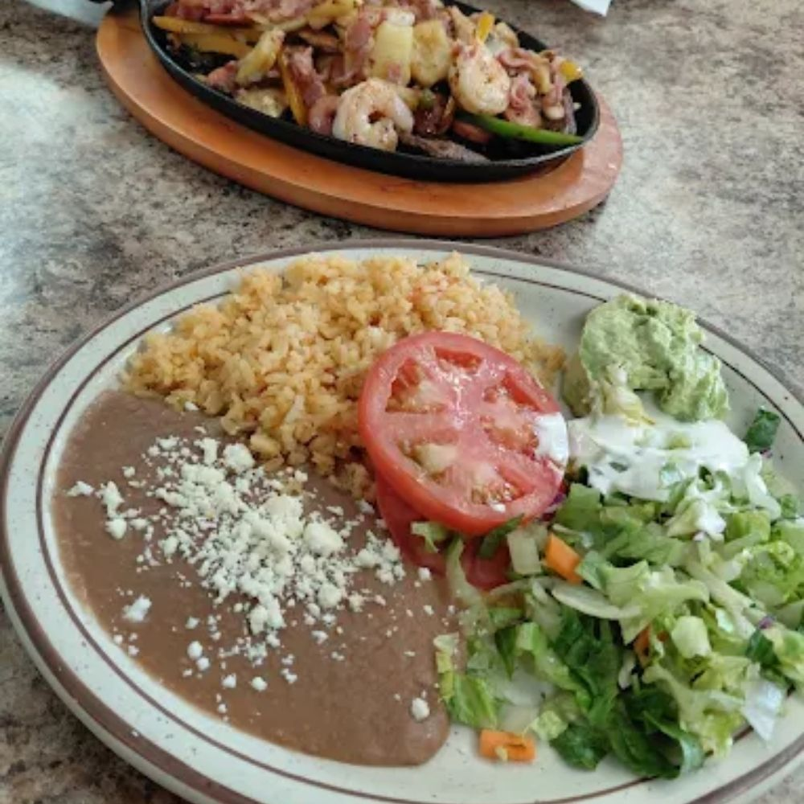
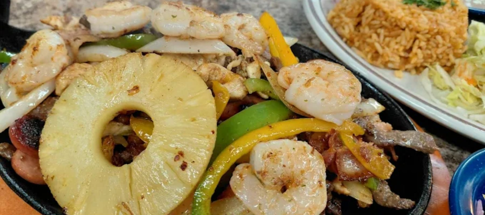
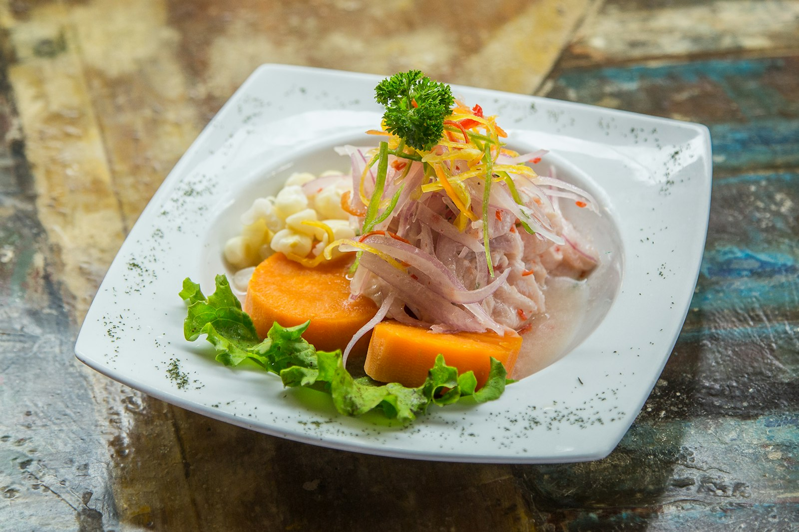
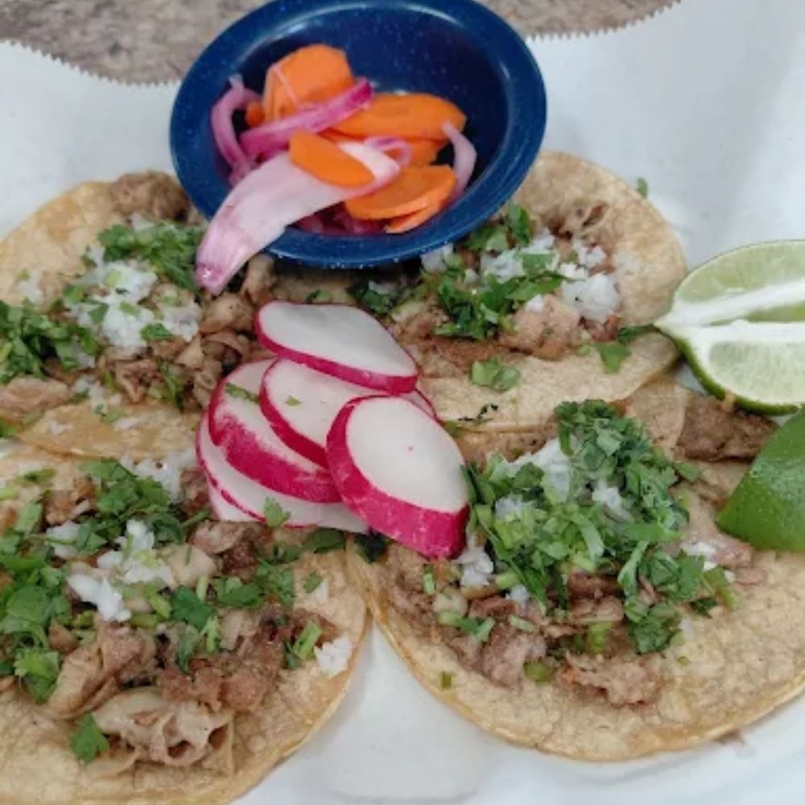
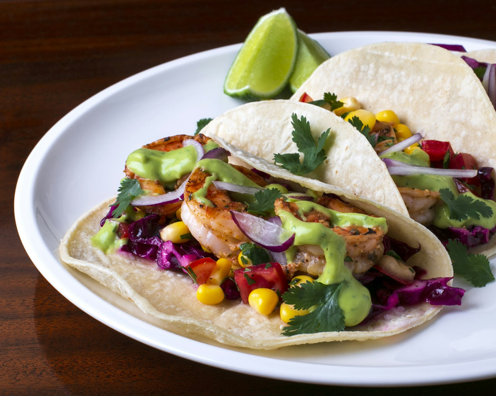

01

Casa Especial
El Jarocho
Our namesake plate, and the whole menu in one bite: carne asada with grilled vegetables, shrimp and melted cheese, plated with salad, rice, beans and avocado.
$20.94 Signature plate

Veracruz · East Moline, Illinois
A family-owned taqueria bringing the coastal flavors of Veracruz to the Quad Cities — seafood, tacos, fajitas & breakfast. When you're here, you're family.


Nuestra Historia · Our Story
Taquizas Los Jarochos is a family-owned taqueria that opened its doors in East Moline on February 23, 2026. The name "jarocho" celebrates the spirit of Veracruz — the lively port city on Mexico's Gulf coast — and you taste it in every plate.
That coastal heritage means a kitchen built around the sea: garlic shrimp, fried mojarra, campechana, and tilapia a la Veracruzana, served right alongside the tacos, fajitas, and hearty Mexican & American breakfasts that keep neighbors coming back.
"When you're here, you're family." — The sign by our front door
Las Estrellas · The Stars
The dishes that define puro sabor jarocho — bold, generous, and made to share.

Casa Especial
Our namesake plate, and the whole menu in one bite: carne asada with grilled vegetables, shrimp and melted cheese, plated with salad, rice, beans and avocado.

Del Mar · From the Sea
Plump shrimp bathed in golden garlic, served with rice, crisp salad, guacamole and warm corn tortillas. The taste of the Veracruz coast, right here in East Moline.

Most Loved
Three barbacoa tacos crisped with cheese until golden, served with a rich consommé for dipping. Order them, then order them again.

Tradición Veracruzana
Two fish fillets simmered in a classic Mexican tomato sauce — the dish that gives Veracruz its name — with rice, salad, guacamole and tortillas.
Our Namesake
A taquiza is a taco feast — and it's the reason we're called Taquizas Los Jarochos. We bring the spread, the sabor and the fiesta straight to your party, quinceañera, office event or backyard gathering.
La Galería
Fresh off the comal and the plancha.

Por Qué Los Jarochos
Taco feasts catered for parties and events of any size.
Coastal Veracruz cooking — camarones, mojarra & campechana.
Mexican & American breakfast served morning to close.
Quick pickup ordering and DoorDash delivery.
A warm room where, by the door, you're already family.
Se habla español — and everyone's welcome at the table.
Quesadillas, nuggets & favorites the little ones love.
Horchata & jamaica, made fresh to cool the heat.
La Familia Crece
We're a brand-new family business — leave us your first review on DoorDash, Yelp or Facebook. ¡Gracias!
Visítanos · Find Us